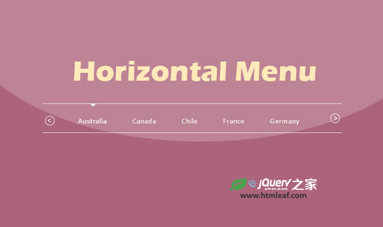

CSS3响应式下拉导航菜单特效
CSS3 animated & responsive dropdown menu
jQuery之家
返回下载页
Home
Archive
Sub Item 1
Sub Item 2
Sub Item 3
Categories
Sub Item 1
Sub Item 2
Sub Item 3
About
Contact
如果你喜欢这个插件，那么你可能也喜欢:
Material Design风格鼠标滑过导航菜单特效

基于jQuery UI的跨设备响应式水平菜单特效